原文：How Unreal Renders a Frame
作者：Kostas Anagnostou
发布时间：2017 年 10 月 25 日
原文分析版本：Unreal Engine 4.17.1
这是“How Unreal Renders a Frame”系列的第一篇，另见 Part 2 和 Part 3。
前些天我在翻看 Unreal 源码，想起一些分析知名游戏如何渲染一帧的精彩文章，于是也想用类似的办法研究一下 Unreal 在默认配置和场景设置下如何完成一帧渲染。
我们能够直接阅读源码，当然可以从 renderer 的实现入手。不过 Unreal 的 renderer 体量很大，rendering path 又很依赖具体上下文。相比之下，一份干净的底层 API call 列表更容易跟踪，遇到缺失的信息时再回头查源码即可。
我搭了一个简单场景，放入静态和动态物件、几盏灯、Volumetric Fog、透明物体以及一个粒子效果，尽量覆盖更多 material 和 rendering method。
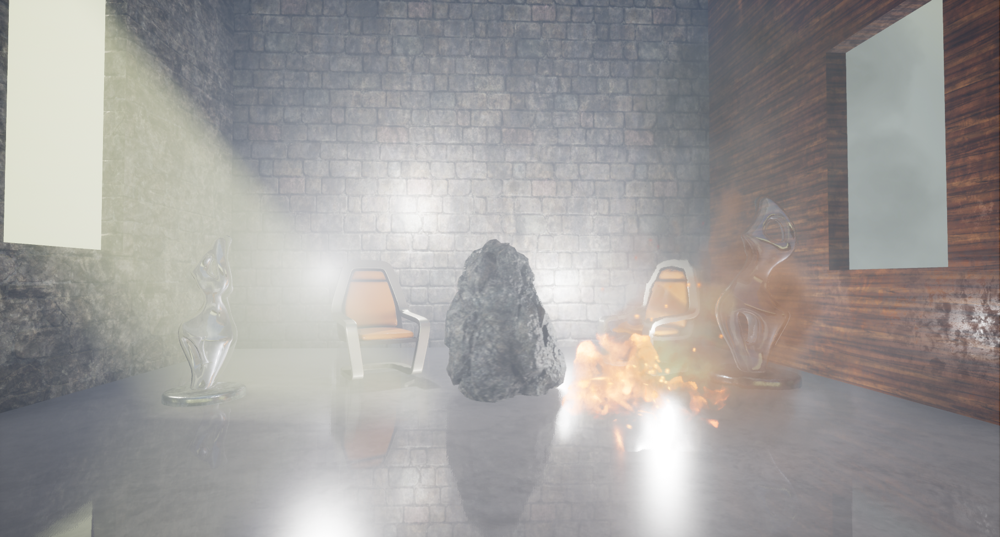
随后，我通过 RenderDoc 启动 Editor 并抓取了一帧。这份 capture 未必能代表真实游戏中的一帧，但足以粗略展示 Unreal 如何渲染一个典型场景。我没有修改默认设置，目标平台是 PC，质量等级设为“最高质量”。
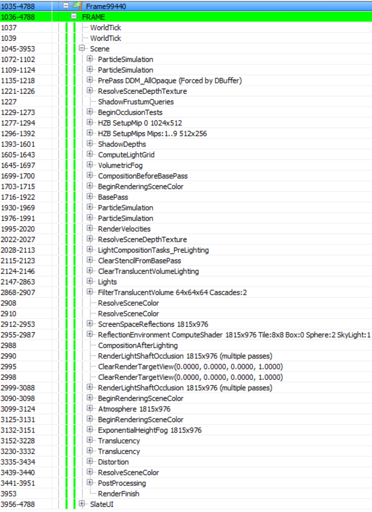
先作说明：下文分析来自 GPU capture 和 renderer 源码，版本为 4.17.1。当时我此前并没有 Unreal 使用经验，如有遗漏或理解错误，欢迎在原文评论区指出。
Unreal 的 draw call 列表相当整洁，标注也很完整，分析起来省了不少力气。场景中包含的对象、material 以及目标质量不同，列表也会随之变化。例如场景没有粒子时，ParticleSimulation pass 就不会出现。
SlateUI render pass 包含 Unreal Editor 绘制自身 UI 时发出的全部 API call。这里忽略它，只看 Scene 下的 pass。
一帧从 ParticleSimulation pass 开始。它在 GPU 上计算场景中各个 particle emitter 的运动和其他属性，并写入两个 render target：位置使用 RGBA32_Float，速度使用 RGBA16_Float，另有一些与时间和生命周期有关的数据。下图是 RGBA32_Float render target 的输出，其中每个 pixel 都对应一个 sprite 的世界空间位置。
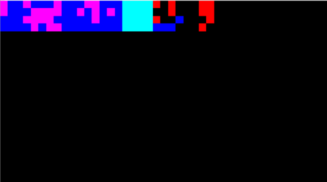
这个场景中的粒子效果似乎有两个 emitter，需要在 GPU 上模拟，但不需要碰撞。相应的 rendering pass 因而可以放在一帧较早的位置执行。
接下来是 PrePass render pass，本质上就是 Z-Prepass。它把所有 opaque mesh 渲染到一个 R24G8 depth buffer 中。
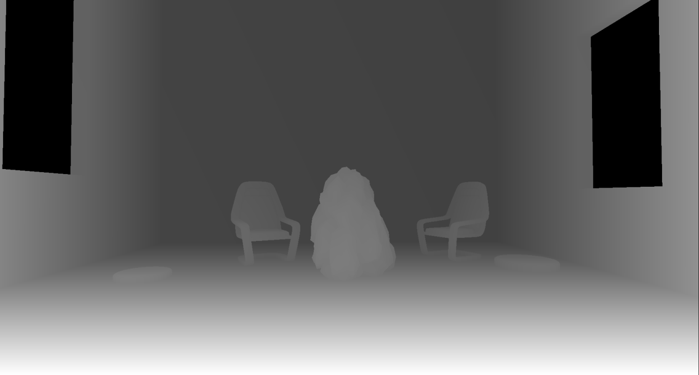
Unreal 写入 depth buffer 时使用 Reverse-Z：near plane 映射到 1，far plane 映射到 0。这样可以提高整个深度范围内的精度，减少远处物体的 Z-fighting。
从 pass 的名称看，这次 Z-Prepass 是由 DBuffer 触发的。DBuffer 指 Unreal Engine 用来绘制 deferred decal 的 decal buffer。deferred decal 需要 scene depth，因此会启用 Z-Prepass。后文还能看到，z-buffer 也用于 occlusion 计算和 Screen Space Reflection。
列表里有些 render pass 看起来是空的。例如 ResolveSceneDepth 可能留给那些必须先“resolve”render target、才能将其当作 texture 使用的平台，PC 不需要这一步。ShadowFrustumQueries 看起来也只是一个占位 marker，真正用于 shadow 的 occlusion test 会在下一个 render pass 中发生。
BeginOcclusionTests 负责一帧中的全部 occlusion test。Unreal 默认使用 Hardware Occlusion Query 判断遮挡，基本过程分为三步：
把所有被视为 occluder 的物体，例如较大的 solid mesh，渲染到 depth buffer。
创建并发出 occlusion query，然后渲染待测试物件。这个过程使用第一步得到的 depth buffer 做 Z-Test。query 会返回通过 Z-Test 的 pixel 数量，结果为 0 表示物件被 solid mesh 挡住。直接渲染完整 mesh 的开销可能很大，通常会改用它的 bounding box。只要 bounding box 不可见，mesh 就一定不可见。
CPU 读回 query 结果，根据通过测试的 pixel 数量决定是否提交该物件。即使只有少量 pixel 可见，也可以判断它不值得渲染。
Unreal 会根据上下文选择不同类型的 occlusion query。
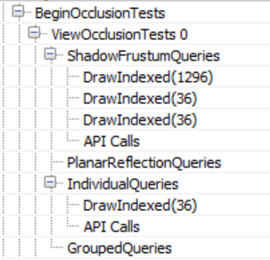
Hardware Occlusion Query 有几个明显的缺点。它的粒度是 draw call，因此 renderer 要为每个待测 mesh 或 mesh batch 提交一次 draw call，一帧中的 draw call 数量可能大幅增加。它还需要 CPU readback，会引入 CPU-GPU synchronization point；CPU 读取结果时，必须等待 GPU 完成 query。它对 instanced geometry 也不算友好，这里先不展开。
Unreal 对 CPU-GPU synchronization 的处理方式和其他使用 query 的引擎类似：把 query data 的读取推迟若干帧。这个办法可行，不过镜头快速移动时可能出现物件突然跳入画面的现象。实际问题通常不会太严重，因为用 bounding box 做 occlusion culling 属于 conservative test，mesh 往往会在真正进入视野之前就被标记为可见。
额外的 draw call 开销仍然存在，也很难彻底消除。Unreal 会把 query 分组来缓解这个问题。它先将所有 opaque geometry 渲染到 z-buffer，也就是前面提到的 Z-Prepass；随后为每个待测试物件发出独立 query。一帧结束时，renderer 读取前一帧或更早一帧的 query data，据此判断物件是否可见。可见物件会被标记为下一帧可渲染。
不可见物件则会进入 grouped query。一个 grouped query 最多批处理 8 个物件的 bounding box，并在下一帧测试整组的可见性。如果该组重新可见，renderer 会拆开它们，再次发出独立 query。镜头和物件静止或移动很慢时，这种做法可以把所需的 occlusion query 数量减少到原来的八分之一。我觉得有些奇怪的是，被遮挡物件的分组似乎带有随机性，并不依据空间距离。
这一过程对应 render pass 列表中的 IndividualQueries 和 GroupedQueries marker。此处的 GroupedQueries 是空的，因为引擎在上一帧没有生成任何 grouped query。
occlusion pass 的最后，ShadowFrustumQueries 会对 local light（point light 或 spot light）的 bounding mesh 发出 Hardware Occlusion Query。看起来无论灯光是否投射 shadow 都会测试，这一点和 marker 的名字并不完全一致。灯光一旦被遮挡，就没必要继续计算它的 lighting 和 shadow。
场景中有 4 盏投射 shadow 的 local light，它们的 shadowmap 每帧都要计算，但 ShadowFrustumQueries 下只有 3 个 draw call。我猜其中一盏灯的 bounding volume 与相机 near plane 相交，所以 Unreal 直接认定它可见。对于需要计算 cubemap shadowmap 的 dynamic light，occlusion test 提交的是一个 sphere。
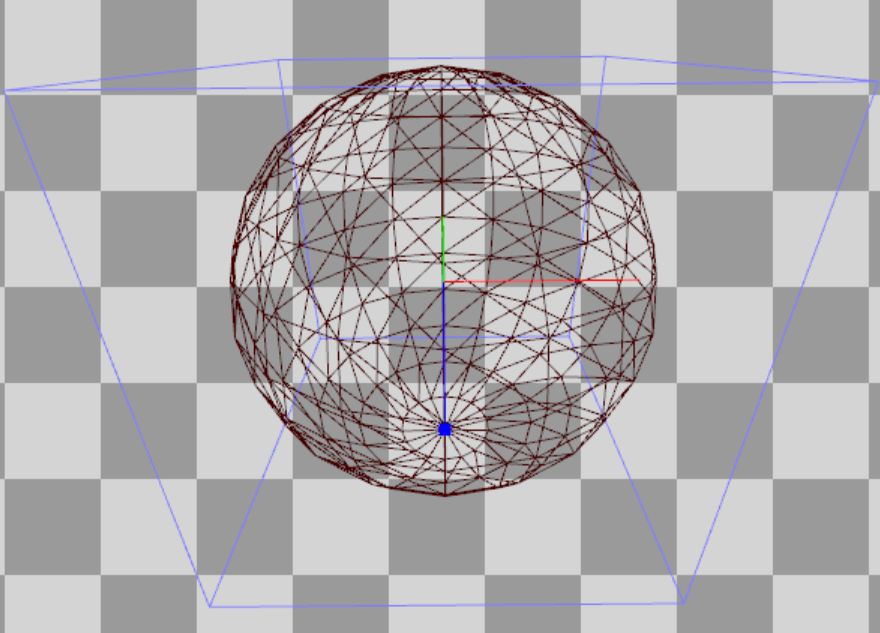
而对于使用 per-object shadow 的另一类灯光，提交的则是 frustum。
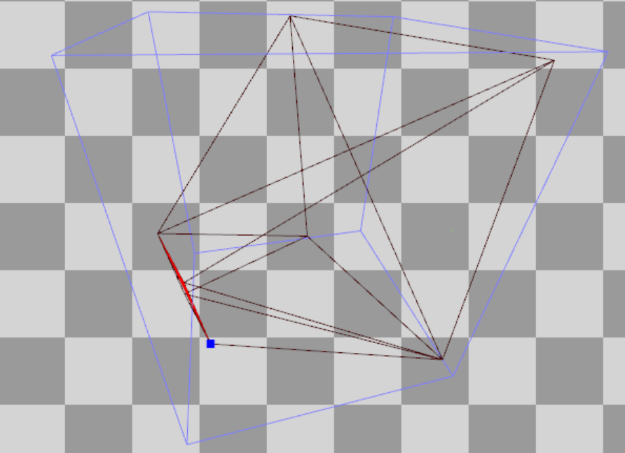
我猜 PlanarReflectionQueries 是计算 Planar Reflection 时使用的 occlusion test。Planar Reflection 会把相机变换到反射平面之后或之下，再重新绘制 mesh。
随后 Unreal 创建 Hi-Z buffer，对应 HZB SetupMipXX pass，texture format 为 R16_Float。它以 Z-Prepass 得到的 depth buffer 为输入，连续 downsample，生成一条 depth mip chain。为了便于处理，第一个 mip 看起来还被重新采样到了 2 的幂尺寸。
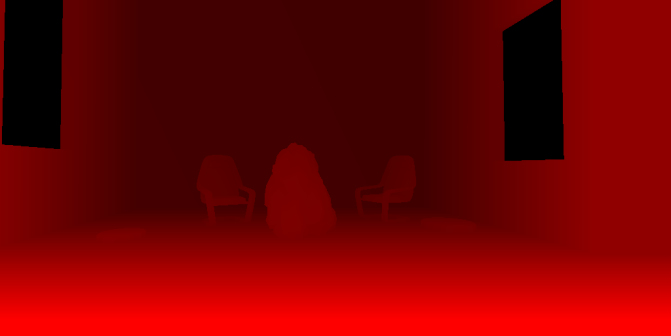
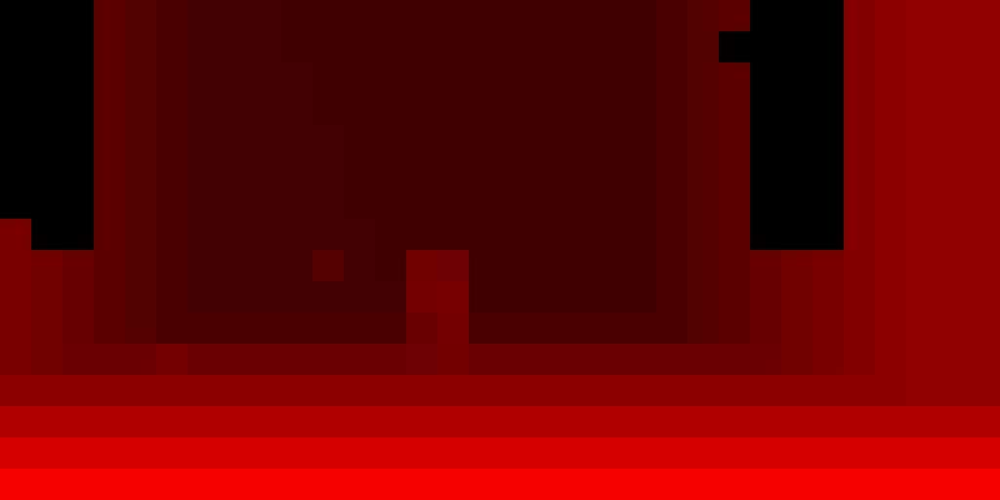
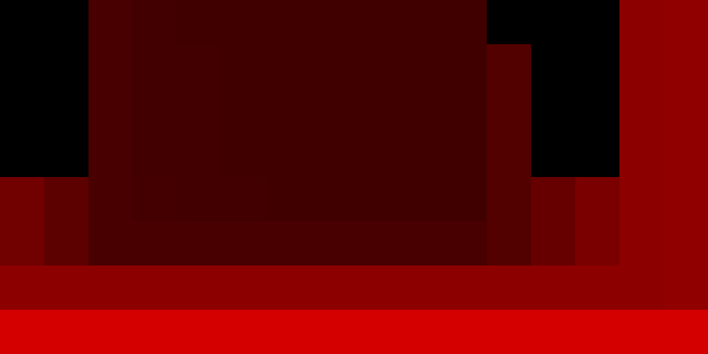
由于 Unreal 使用 Reverse-Z，Pixel Shader 在 downsample 时采用 min operator。
下一步是 ShadowDepths，也就是 shadowmap 计算 pass。
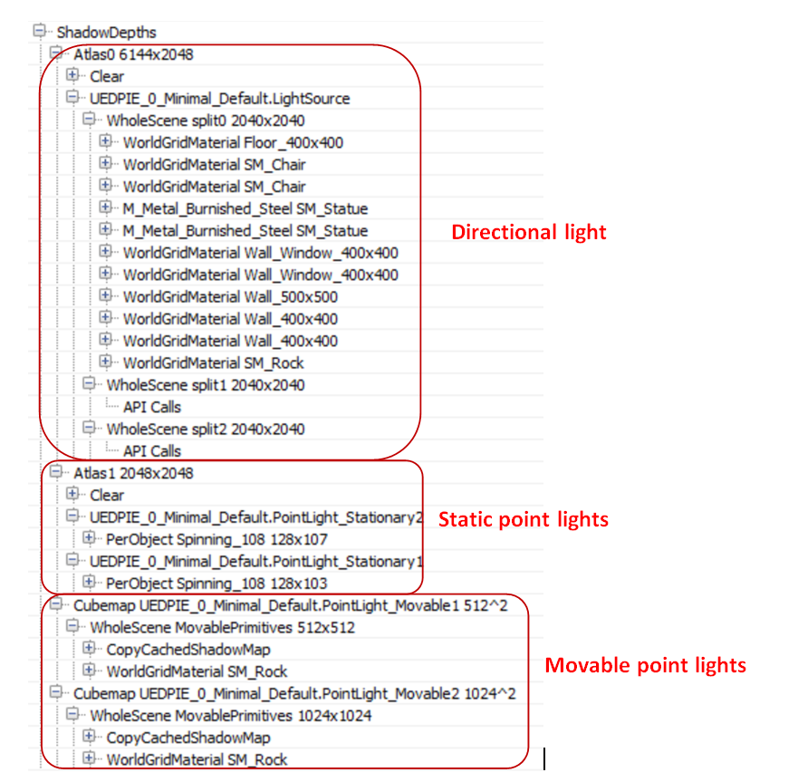
我在场景中放入了一盏 Stationary Directional Light、两盏 Movable Point Light、两盏 Stationary Point Light 和一盏 Static Point Light，它们都投射 shadow。
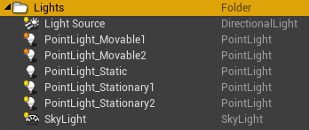
对于 Stationary light，renderer 会为 static prop 烘焙 shadow，只给 dynamic（Movable）prop 实时计算 shadow。Movable light 每帧为所有物件计算 shadow，完全是动态的。Static light 则把 lighting 和 shadow 烘焙进 lightmap，运行时的 rendering 过程中不应该再出现。
为了观察 Cascaded Shadow Map 的处理方式，我还给 Directional Light 设置了 3 个 split。Unreal 创建一张 3×1 的 R16_TYPELESS shadowmap texture，三个 tile 横向排列，分别对应一个 split。texture 每帧都会清空，因此不会根据距离错开更新各个 shadowmap split。在 Atlas0 pass 中，所有 solid prop 都会写入对应的 shadowmap tile。
从上面的 call list 可以确认，只有 Split0 包含待渲染的 geometry，其他 tile 都是空的。shadowmap 渲染没有使用 Pixel Shader，生成速度因此提高了一倍。至少在这个 capture 中，Stationary 和 Movable 的差别似乎不适用于 Directional Light，renderer 会把包括 static prop 在内的所有物件写入 shadowmap。
接着是 Atlas1 pass，它为所有 Stationary Point Light 渲染 shadowmap。这个场景只有 Rock 被标记为 Movable，也就是 dynamic prop。对于 Stationary light 和 dynamic prop，Unreal 使用存放在 texture atlas 中的 per-object shadowmap，相当于为每个 dynamic prop 与每盏 light 的组合渲染一个 shadowmap tile。
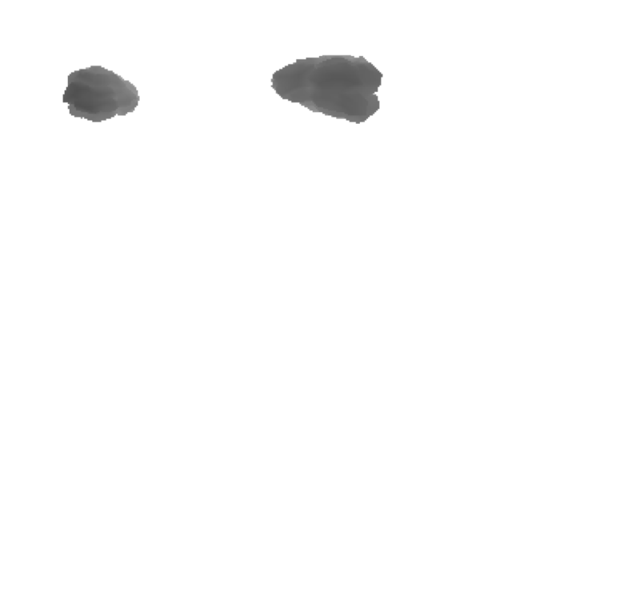
对于 dynamic（Movable）light，Unreal 会在 CubemapXX pass 中为每盏灯生成传统的 cubemap shadowmap。Geometry Shader 负责选择写入哪个 cube face，从而减少 draw call。这个过程只渲染 dynamic prop；static 和 Stationary prop 使用 shadowmap cache。CopyCachedShadowMap pass 先复制缓存的 cubemap shadowmap，再把 dynamic prop 的 shadow depth 画到上面。下图是一盏 dynamic light 的 cached cubemap shadowmap 中的一个 face，也就是 CopyCachedShadowMap 的输出。
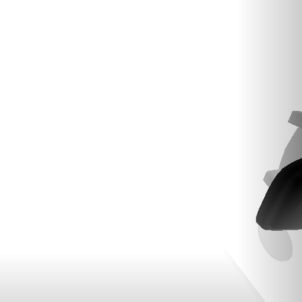
加入 dynamic Rock 后，结果如下。
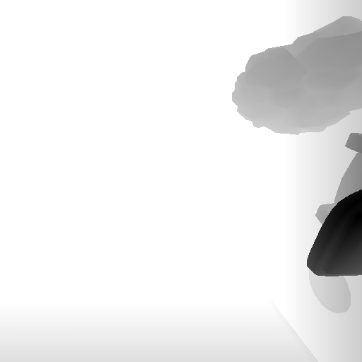
static geometry 的 cubemap 会被缓存，不必每帧生成，因为 renderer 知道这盏灯其实没有移动，尽管它被标记成了 Movable。如果灯光参与动画，renderer 会在每帧重新渲染所谓的“cached” cubemap，先画入全部 static 和 Stationary geometry，再叠加 dynamic prop 的 shadowmap。下面这张图来自我为验证这一点所做的另一组测试。
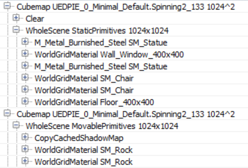
那盏 Static light 完全没有出现在 draw call 列表中。这也证实了它不会影响 dynamic prop，只会通过预烘焙 lightmap 作用于 static prop。
最后补充一个 profiling 建议：场景中有 Stationary light 时，先完成 lighting bake，再在 Editor 中做性能分析。我不确定 Standalone 模式的处理是否相同，但如果没有烘焙，Unreal 似乎会把 Stationary light 当成 dynamic light，为它生成 cubemap，而不是使用 per-object shadow。
下一篇会继续分析 light grid generation、G-Prepass 和 lighting。
AI使用声明：学习与行文过程中使用了生成式AI帮助资料整理收集